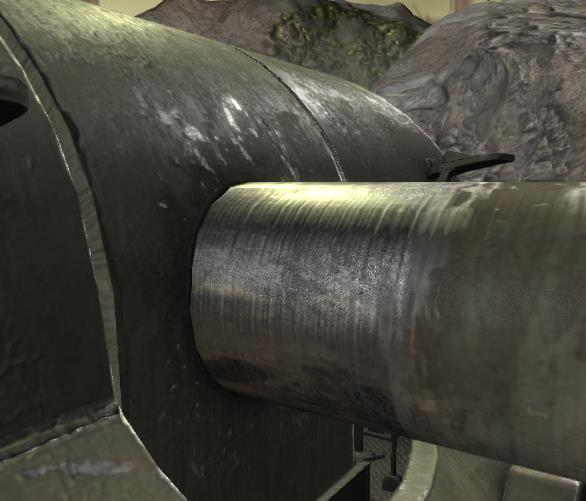

Information on Tank Exporters lighting model.
Tank Exporter supports FXAA and Bloom. TE also renders using PBR shading (Physically Based Rendering).
As part of the rendering pipeline, TE also uses a cube map for shading effects. Cube maps add color and reflection.
You can turn its visibility on under File/Settings.
Here is an image of the Obj-261's gun showing the influence of the cube map on the colors of the steel.

There is a setting under File/Settings that can be used to put TE in a very simple rendering mode. "Simple Lighting"
This can be useful if TE is crashing on your video hardware.
Shadow mapping uses a great deal of memory and is slow on older hardware.
If rendering times are slow, set the window to blank or grid display. The box on the left with the "NO" symbol.
The fully rendered terrain uses a lot of the GPU's resources.